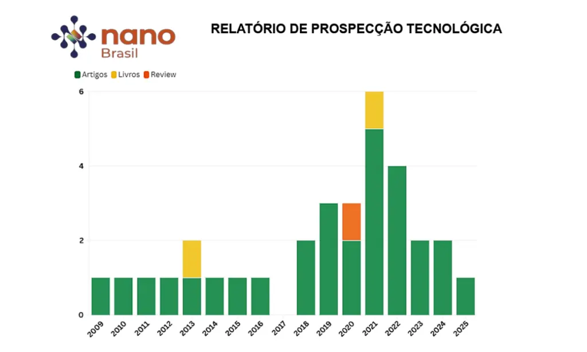

Investir meses em Pesquisa & Desenvolvimento (P&D) não garante que uma empresa chegará a um novo produto. A solução pode já existir, estar protegida por terceiros ou simplesmente não encontrar espaço no mercado. Para enfrentar um dos principais desafios do processo de inovação, que é tomar decisões com pouca informação nas fases iniciais do desenvolvimento, a NanoBrasil lança o Relatório de Inteligência Tecnológica, Estratégica e de Mercado, que reúne análises científicas, patentárias e mercadológicas antes mesmo dos primeiros testes em laboratório.
A análise percorre artigos científicos, patentes depositadas em diferentes países, tendências tecnológicas, concorrentes, possíveis parceiros e indicadores de mercado. A partir desse raio-x, a equipe identifica até dez tecnologias com potencial, avalia riscos e oportunidades e aprofunda as rotas que apresentam maior viabilidade técnica, econômica e comercial.
“O principal ganho é não começar no escuro. O relatório mostra o que já foi desenvolvido, quais caminhos estão protegidos e se existe mercado para a solução. Em alguns casos, a decisão será avançar. Em outros, será mudar a rota antes de perder tempo e dinheiro”, afirma Oscar Geigner, cofundador e CCO da NanoBrasil.
Antes da bancada
O trabalho começa com o estudo de anterioridade, processo que investiga o conhecimento científico e tecnológico já disponível sobre determinada solução. A empresa apresenta uma demanda, uma dificuldade produtiva ou uma possibilidade de novo produto. A equipe da NanoBrasil transforma esse desafio em uma estratégia de busca específica.
As consultas alcançam bases científicas e bancos internacionais de patentes, entre eles ScienceDirect, Scopus, Lens, Espacenet e World Intellectual Property Organization (WIPO). Também podem ser consultados repositórios acadêmicos e a base do Instituto Nacional da Propriedade Industrial (INPI).

Não se trata de digitar palavras-chave e reunir documentos. A equipe constrói equações de busca próprias para cada projeto, filtra os resultados, analisa os estudos relevantes e organiza uma base exclusiva sobre o problema apresentado pelo cliente.
“Criamos uma busca capaz de restringir os resultados à tecnologia que realmente interessa. Depois, lemos os documentos, analisamos os dados e transformamos esse volume de informação em tendências, riscos e oportunidades para a empresa”, explica Manuel Rodríguez, coordenador de Inovação e Desenvolvimento da NanoBrasil.
Um mapa em dados
Um dos estudos que serviram de base para o novo produto resultou em um documento de 37 páginas e 13 figuras sobre nanopartículas aplicadas a tecidos repelentes. A análise reuniu publicações científicas, patentes, tecnologias recorrentes, países depositantes, empresas com atuação no setor e possíveis restrições à liberdade de operação.
Os gráficos mostraram a evolução das pesquisas e dos depósitos de patentes ao longo de duas décadas. O relatório também identificou as tecnologias mais recorrentes, agrupamentos de palavras-chave, classes internacionais de patentes e empresas que lideram o desenvolvimento naquele mercado.

No caso analisado, os Estados Unidos concentravam 109 registros e a Europa, 33. O Brasil possuía apenas quatro patentes nacionais diretamente relacionadas aos ativos pesquisados, mas aparecia como destino de 73 depósitos internacionais com extensão de proteção ao país. O contraste apontou um mercado relevante para empresas estrangeiras, embora com baixa geração local de propriedade intelectual.
O levantamento também sinalizou patentes potencialmente restritivas e indicou caminhos técnicos alternativos. Essa leitura reduz o risco de uma empresa avançar por uma rota que poderá exigir licenciamento, pagamento de royalties ou reformulação posterior.
Dez rotas possíveis
O novo formato amplia a prospecção tecnológica que a NanoBrasil já realizava. Depois de mapear o conhecimento acumulado e o cenário de propriedade intelectual, a equipe seleciona até dez tecnologias com maior possibilidade de gerar novos produtos.
Cada alternativa passa por uma análise estratégica. Entram na avaliação a maturidade da tecnologia, as limitações técnicas, a presença de concorrentes, a dimensão do mercado, a cadeia produtiva, os riscos de propriedade intelectual e as condições necessárias para chegar à escala industrial.
A empresa recebe uma apresentação dos resultados e participa da seleção de uma ou duas rotas mais alinhadas à sua estrutura, aos seus objetivos e ao tempo previsto para chegar ao mercado.
“A empresa não recebe uma pilha de artigos e patentes. Ela recebe uma leitura do que esses documentos significam para o negócio e quais tecnologias apresentam as melhores condições para avançar”, destaca Manuel.
Na etapa seguinte, a análise se concentra nas alternativas escolhidas. O relatório passa a detalhar barreiras regulatórias, necessidades de validação em laboratório, capacidade produtiva, possibilidades de escalonamento e etapas necessárias para transformar a oportunidade em produto.
Mercado entra na conta
Estudos de anterioridade e prospecção tecnológica já são utilizados no ambiente de inovação. O diferencial incorporado pela NanoBrasil está na presença da inteligência estratégica e mercadológica ao longo de todo o processo.
Uma tecnologia pode ser cientificamente promissora e, ainda assim, enfrentar um mercado pequeno, uma cadeia de fornecimento inviável ou concorrentes com ampla proteção intelectual. Também pode revelar o contrário: uma área pouco explorada, com demanda crescente e espaço para desenvolvimento nacional.
O mapeamento permite identificar quem pode disputar o mercado, quem domina determinada tecnologia e quais organizações podem se tornar parceiras, fornecedoras ou licenciadoras. Uma patente encontrada durante a busca não representa necessariamente o fim do projeto. Ela pode levar a uma nova formulação, a uma rota alternativa ou a uma parceria empresarial.
“Não basta saber se alguém já fez. É preciso entender se vale a pena comercialmente, quem está nesse mercado e por qual caminho a empresa pode chegar a uma solução competitiva. Essa inteligência muda a qualidade da decisão”, afirma Oscar.
Ponto zero do P&D
O relatório pode ser contratado como uma entrega independente. A empresa recebe o estudo, a base de documentos analisados, os gráficos, a avaliação estratégica e as recomendações construídas pela equipe técnica.
Quando há interesse em continuar, ele passa a funcionar como o ponto inicial de um projeto conduzido pela NanoBrasil. A entrega final inclui o escopo proposto para o desenvolvimento, as etapas técnicas, os recursos necessários e a rota definida para levar a solução à bancada e, posteriormente, ao mercado.
Os primeiros contatos com grandes empresas já resultaram em contratos e novas negociações. O interesse reflete uma demanda crescente por decisões de inovação apoiadas simultaneamente em ciência, propriedade intelectual e inteligência comercial.
“A nanotecnologia ainda parece distante para muitos executivos e equipes técnicas. O relatório transforma esse universo em escolhas concretas, mostra onde estão as oportunidades e deixa claro como a NanoBrasil pode conduzir o desenvolvimento”, afirma Oscar.
Depois da apresentação dos resultados, a empresa escolhe a tecnologia que deseja priorizar. A NanoBrasil entrega, então, a proposta de continuidade com o caminho técnico, as etapas de desenvolvimento e a estratégia para transformar a oportunidade identificada em um novo produto.